遊びで植物を育てよう
2024/08/25
このプルーンはいつ摘み取ろうかな。
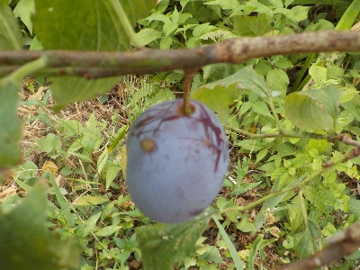
プルーンの実が1つだけありました。
まだ硬いので収穫しなかったです。近いうちに収穫時期が来ると思いますが、なんか忘れそうだな。
【プルーンTOP】
【果物TOP】
【園芸TOP】
2024/06/26
プルーンの木の下に木が生えていました。
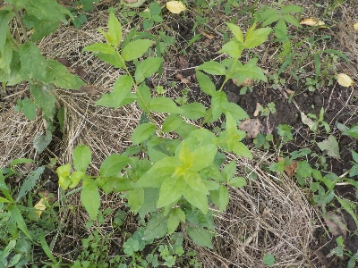
プルーンの木の下に生えたってことはプルーンの子供かな？
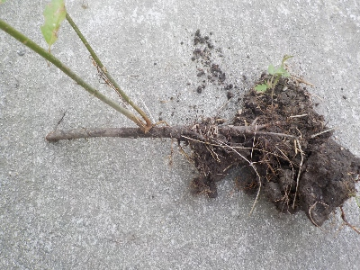
引っこ抜いてみたら、木の根っこから芽が出ていました。
根っこってことは、プルーンの台木ですね。台木ってことは接ぎ木に使えば、プルーンの成長が早いかも。
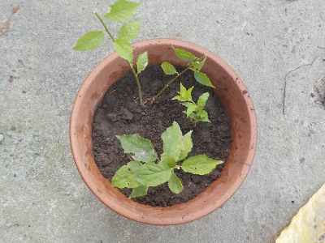
有効利用出来るかもしれないので鉢に植えました。
【プルーンTOP】
【果物TOP】
【園芸TOP】
2024/06/09
プルーンの挿し木は失敗しました。
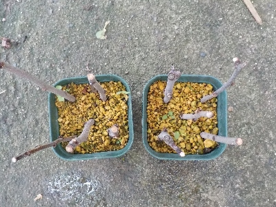
花が咲いて葉っぱが出て、次に根っこが出るかと思ったんですが葉が枯れました。
【プルーンTOP】
【果物TOP】
【園芸TOP】
2024/04/14
挿し木のプルーンに花が付きました。
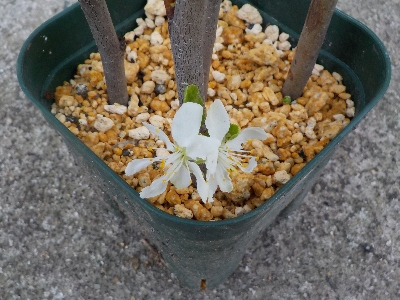
普通に木で咲いてると小さいので目立たないですが、挿し木だとしっかり見れますね。
つまみ取った方がいいんでしょうが、少し鑑賞することにしました。
【プルーンTOP】
【果物TOP】
【園芸TOP】
2024/02/12
ちょっと古い枝でプルーンの挿し木しました。
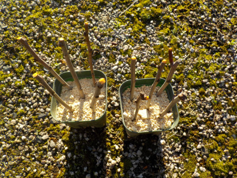
成功したことないプルーンの挿し木です。今回は伸びたばっかりの若い枝を使わないで、ひとつ古いグレーっぽい枝で挑戦です。
【プルーンTOP】
【果物TOP】
【園芸TOP】
2023/08/10
プルーンが美味しくなりました。
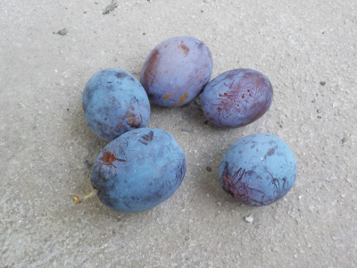
我が家のプルーンは小さくてあっさりした味だなと食べながら思いました。
生のプルーンを買って食べていないので、この味が普通なのかが分からないです。
【プルーンTOP】
【果物TOP】
【園芸TOP】
2023/07/30
濃い色のプルーンがあったので食べました。
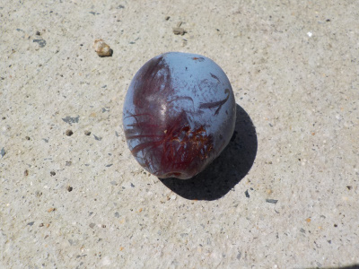
まだ硬いとは思ったんですが、色が濃いので一つ食べてみました。
食べれなくはないが、甘くなかったです。もうちょっと収獲は先ですね。
【プルーンTOP】
【果物TOP】
【園芸TOP】
2023/04/09
プルーンの小さな花が開花中です。
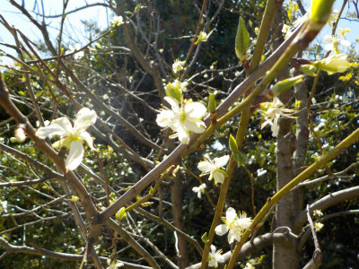
花がまばらで少ないです。
実は出来るかな？
【プルーンTOP】
【果物TOP】
【園芸TOP】
2023/02/05
プルーンの枝をノコギリで切りました。
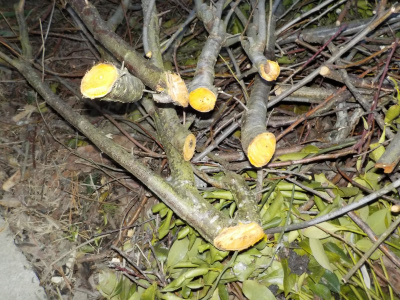
毎年剪定をしていますが、今回はいつもより多めに切りました。
内側にある太目の枝を、ノコギリを使って切り落としました。これで日当たりや風通しが良くなったと思います。
【プルーンTOP】
【果物TOP】
【園芸TOP】
2022/04/10
プルーンに害虫。
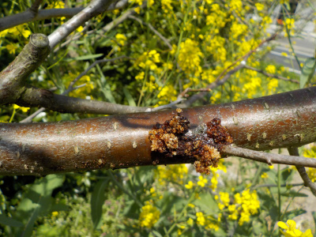
プルーンはあまり虫が付かないイメージがあったんですが、いるんですね。
穴から樹液が出てて、それが固まってました。自己修復してるのかな。
【プルーンTOP】 【果物TOP】 【園芸TOP】
2021/08/08
プルーンの剪定をしました。
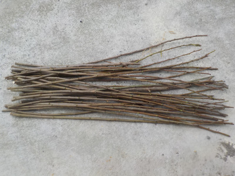
枝が伸び伸びだったので剪定しました。
プルーンの枝はわりとまっすぐなので、ちょっとした支柱に使えそうです。
まっすぐで長くて固そうな枝を取って置くことにしました。
まずはこれを使って、クレマチスのフェンスを作ろうと思っています。
【プルーンTOP】 【果物TOP】 【園芸TOP】
2021/07/18
プルーンを3本挿し木しました。
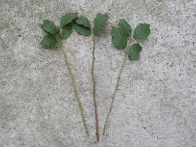
30センチくらいの枝を3本挿し木しました。
今年こそは成功させたい。
【プルーンTOP】 【果物TOP】 【園芸TOP】
2021/04/04
プルーンの花が咲きました。
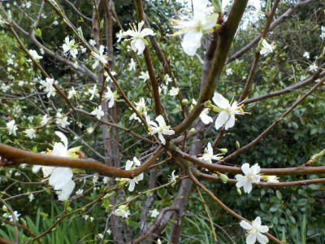
今年はいつもより花が多い気がします。
実も沢山出来るといいんですが、どうなるでしょうね。
【プルーンTOP】 【果物TOP】 【園芸TOP】
2020/06/07
プルーンの挿し木は失敗しました。
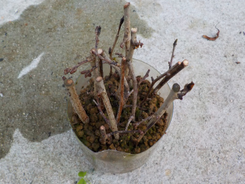
全滅です。
プルーンの実が出来たら実生をやろうと思います。
【プルーンTOP】 【果物TOP】 【園芸TOP】
2020/02/24
プルーンの挿し木をしました。
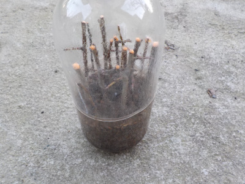
近頃色々ペットボトルで挿し木をしています。
プルーンもためしにやってみました。
【プルーンTOP】 【果物TOP】 【園芸TOP】
2013/04/07
プルーンの花はなんか寂しい。
小さくて薄い花ですね。
地味だ。

我が家のこの木は、今年は花の数も少ない気がする。
【プルーンTOP】 【果物TOP】 【園芸TOP】
2013/04/28
プルーンの実生発見。
勝手に実が落ち、芽が出て大きくなっています。
自然な感じです。

プルーンの木の下なので、このまま成長させるわけにはいかないです。
どうしようかな。
【プルーンTOP】 【果物TOP】 【園芸TOP】
2013/09/14
プルーンむしゃむしゃ。
私が見ている間もずーっと食べています。
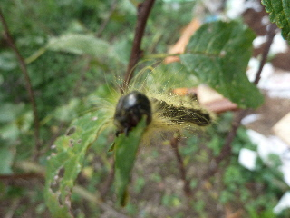
沢山食べるなー。
【プルーンTOP】
【果物TOP】
【園芸TOP】
畑仕事じゃないよ。
【おいしいものを食べよう。】【しっかり寝よう。】
【ソロ活をしよう!】【季節感のあることをしよう。】【動画視聴はほどほどに。】【当サイトの全てのコンテンツは無断転載禁止です。】